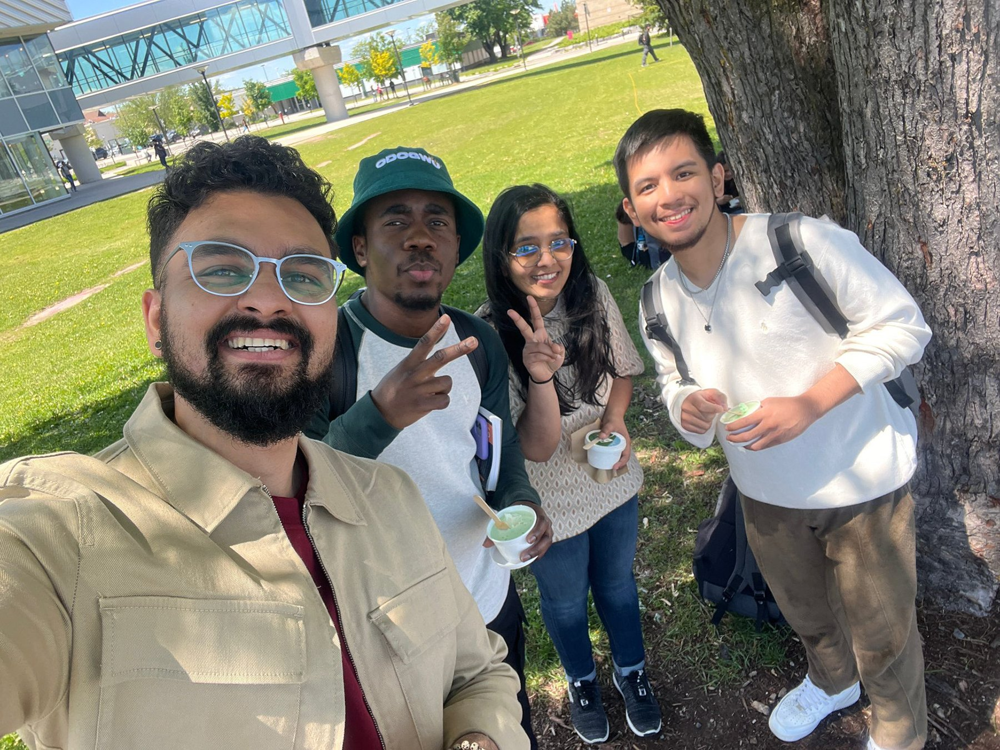
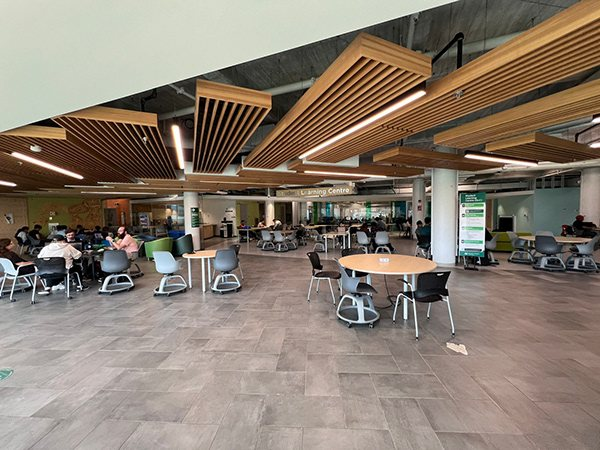
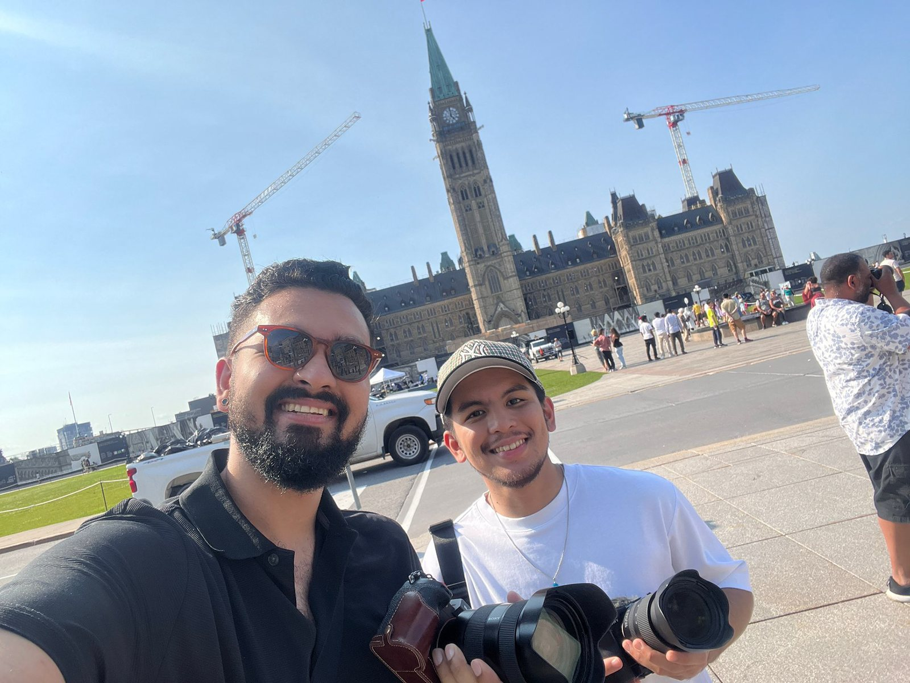
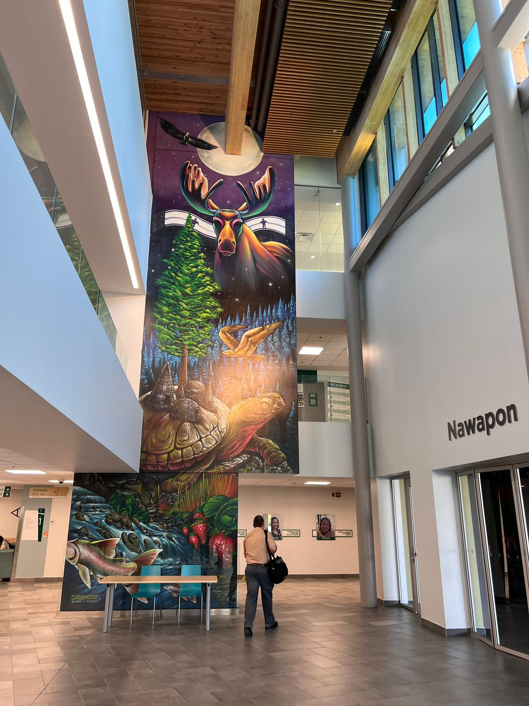
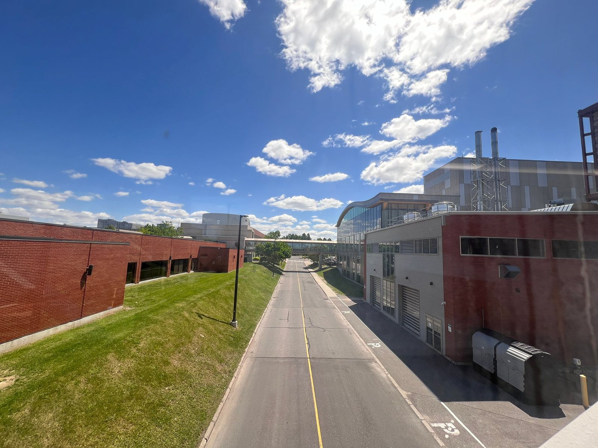
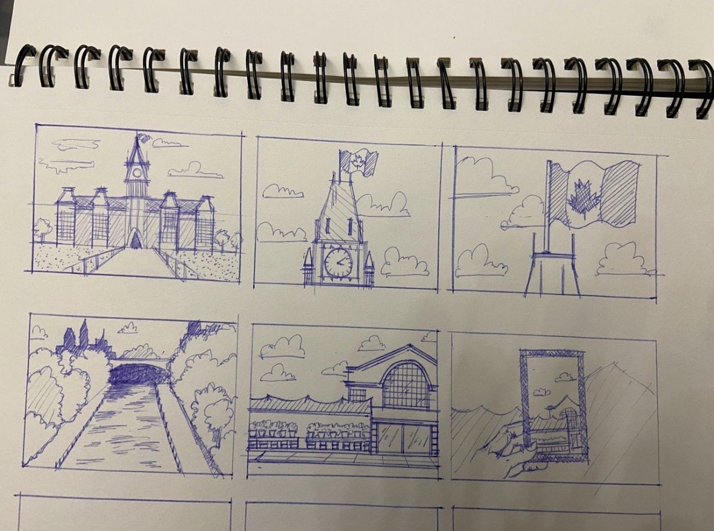
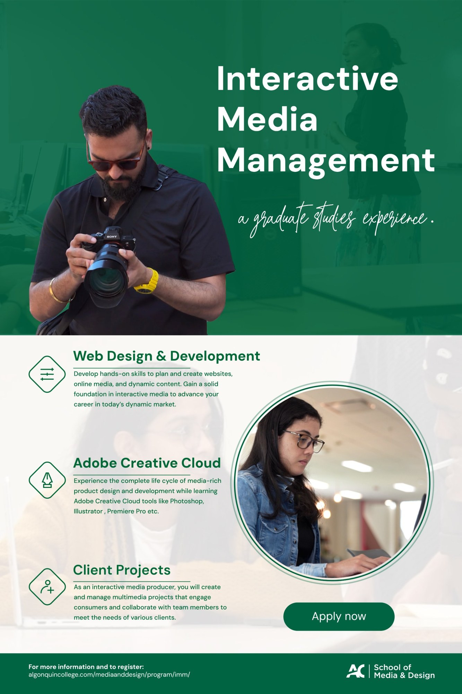
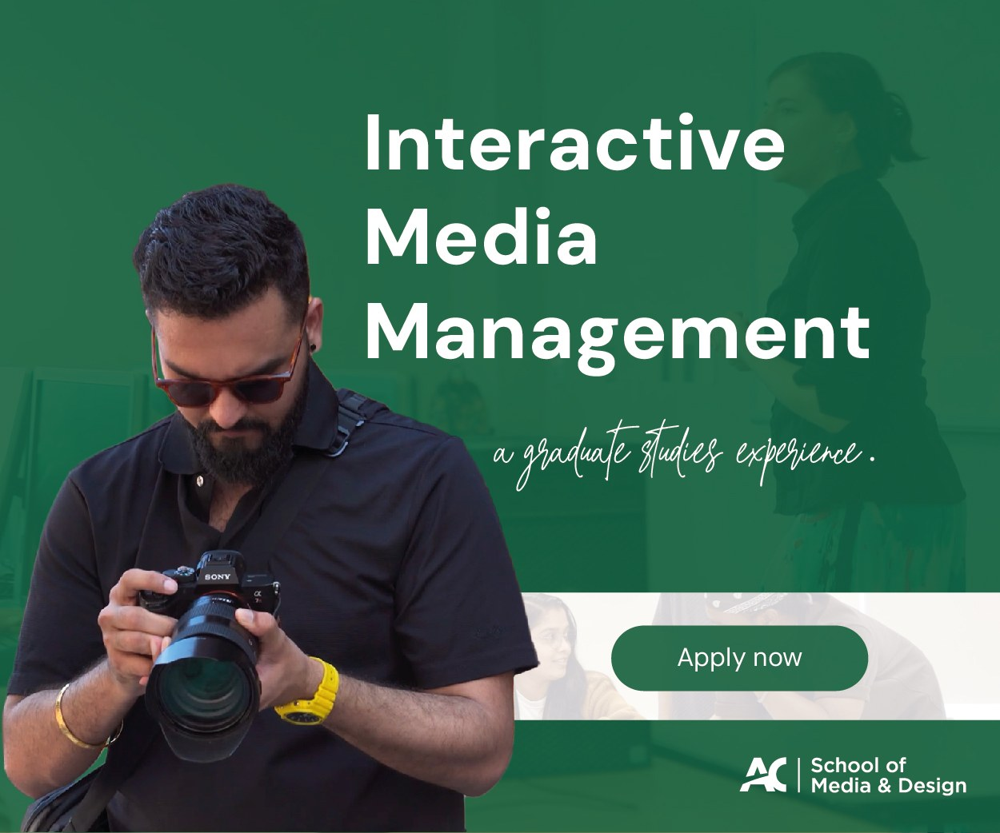

Interactive Media Management campaign
An interview-style video, campus posters and digital banners that gave Algonquin College’s Interactive Media Management program one clear, consistent voice.
- Discipline
- Campaign: video, posters and web banners
- My role
- Graphic designer, storyboard artist, motion graphics editor, on-screen talent
- Team
- Motion Cartel, a student team
- Client
- Algonquin College Media and Design
- Deliverables
- 3 video cuts, posters, web banners
- Tools
- Photoshop, Illustrator, Premiere Pro, After Effects
Overview
As students, my team, Motion Cartel, partnered with Algonquin College’s Media and Design department on a promotional campaign for the Interactive Media Management (IMM) program.
The goal was to raise the program’s visibility and spark engagement by showing off its hands-on curriculum and the career-building opportunities it opens up.
My role
- Graphic design. I designed the campus poster and the full set of web banners.
- Storyboards. I sketched the storyboards that planned each shot of the video.
- Motion graphics. I edited the animated graphics in the video, keeping them within the college’s logo guidelines.
- On camera. I acted in the video when some of our recruited talent couldn’t make the shoot.
The brief
- Interview-style video. Student and faculty testimonials, program benefits and real-world applications, in a video that’s compelling, easy to watch and on brand.
- Three lengths. A 2-minute, 30-second and 15-second cut, so the story works on every platform.
- Posters and banners. Eye-catching posters for campus and banners for digital channels.
- One look across everything. Video, posters and banners had to share one style, so the campaign felt like a single brand.
Process
Script
We started by working with the client to sharpen their objectives and the campaign’s tone and look. Then we wrote a short, energetic interview script with real emotion and connection.
We didn’t just talk, we showed: motion graphics, fun interviews and on-location shots keep viewers hooked from start to finish. It ends on a clear call to action: Apply Today!
Location scouting
Before storyboarding, we explored the campus and landmarks around Ottawa to find settings that were both beautiful and meaningful. What we found shaped the storyboard and made sure every location supported the video’s message. Here are a few of the spots we considered.
The Motion Cartel team
The Motion Cartel team, out scouting on campus Learning Centre, on campus
Learning Centre, on campus Parliament Hill, Ottawa
Parliament Hill, Ottawa Atrium mural, on campus
Atrium mural, on campus Campus from the walkway
Campus from the walkway Storyboards
We planned every shot before picking up a camera, and I sketched the storyboards. We made two storyboard versions, and the client chose the one that became the foundation of the final video.
Storyboard
My storyboard sketches Filming
We set up lights, cameras and angles, and mixed indoor and outdoor scenes for visual variety. Every shot was framed with care for lighting, angle and story. Afterwards we reviewed each take and carried only the strongest into the edit.
Behind the scenes on set
The final cut
Each cut was tailored to where it would run, so the message lands whether someone watches for almost two minutes or just fifteen seconds.
Posters and web banners
I designed the campus poster and the web banners in multiple sizes for digital channels. They follow the same visual identity as the video, so every touchpoint reads as one campaign. Every photo in them comes from our own shoot with the program’s students and faculty, not stock photography, so the campaign shows the real program. The client approved them, and we delivered the final files.


Challenges
Finding the right song
We compared several tracks to find one that matched the video’s tone and message.
Strict logo guidelines
Building motion graphics inside the college’s logo rules took precision, and pushed us to refine our skills.
Choosing what to show
With so much campus to cover, we had to pick the most engaging and visually strong locations.
Outcome
Problem-solving on set
When some of the talent we’d recruited couldn’t make the shoot, our team stepped in front of the camera ourselves, so the story stayed complete without losing quality.
On time
We set internal deadlines and stuck to them, so the project was delivered on schedule.
A happy client
The client was thrilled with the final video and approved the full campaign.